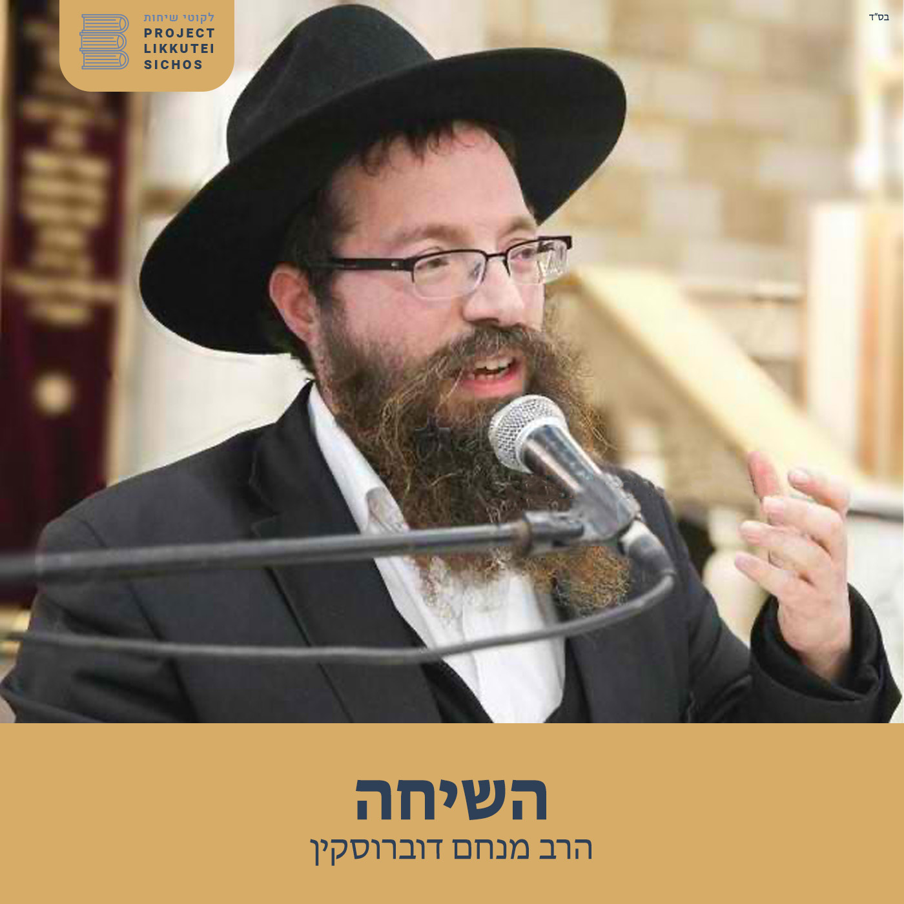

 פיד חיצוני השיחה, הרב מנחם דוברוסקין Project Likkutei Sichos שיעור שבועי בלקוטי שיחות בפנים השיחה מעקב RSS מקור Apple Podcasts
חלק לד, ט"ו באב - הרב מנחם דוברוסקיןהשיחה, הרב מנחם דוברוסקין 2026-07-24 · 25:24 האזנה הוספה לתור נגן הבא סמן כנשמע מקור
חלק כט, ואתחנן ג' - הרב מנחם דוברוסקיןהשיחה, הרב מנחם דוברוסקין 2026-07-17 · 21:08 האזנה הוספה לתור נגן הבא סמן כנשמע מקור
חלק כט, שבת חזון - הרב מנחם דוברוסקיןהשיחה, הרב מנחם דוברוסקין 2026-07-12 · 18:51 האזנה הוספה לתור נגן הבא סמן כנשמע מקור
חלק כח, מטות ב - הרב מנחם דוברוסקיןהשיחה, הרב מנחם דוברוסקין 2026-07-03 · 27:13 האזנה הוספה לתור נגן הבא סמן כנשמע מקור
חלק לג, פנחס א' - הרב מנחם דוברוסקיןהשיחה, הרב מנחם דוברוסקין 2026-06-26 · 15:16 האזנה הוספה לתור נגן הבא סמן כנשמע מקור
חלק לג, חוקת א' - הרב מנחם דוברוסקיןהשיחה, הרב מנחם דוברוסקין 2026-06-16 · 13:04 האזנה הוספה לתור נגן הבא סמן כנשמע מקור
חלק כח, קורח ב' - הרב מנחם דוברוסקיןהשיחה, הרב מנחם דוברוסקין 2026-06-09 · 27:41 האזנה הוספה לתור נגן הבא סמן כנשמע מקור
חלק לג, שלח א' - הרב מנחם דוברוסקיןהשיחה, הרב מנחם דוברוסקין 2026-06-01 · 20:06 האזנה הוספה לתור נגן הבא סמן כנשמע מקור
חלק לג, בהעלותך א - הרב מנחם דוברוסקיןהשיחה, הרב מנחם דוברוסקין 2026-05-28 · 24:42 האזנה הוספה לתור נגן הבא סמן כנשמע מקור
חלק כח, נשא ג' - הרב מנחם דוברוסקיןהשיחה, הרב מנחם דוברוסקין 2026-05-23 · 25:08 האזנה הוספה לתור נגן הבא סמן כנשמע מקור
חלק כח, ערב חג השבועות - הרב מנחם דוברוסקיןהשיחה, הרב מנחם דוברוסקין 2026-05-15 · 22:21 האזנה הוספה לתור נגן הבא סמן כנשמע מקור
חלק לא, במדבר א - הרב מנחם דוברוסקיןהשיחה, הרב מנחם דוברוסקין 2026-05-11 · 24:14 האזנה הוספה לתור נגן הבא סמן כנשמע מקור
חלק כז, בהר ב' - הרב מנחם דוברוסקיןהשיחה, הרב מנחם דוברוסקין 2026-05-01 · 24:37 האזנה הוספה לתור נגן הבא סמן כנשמע מקור
חלק לב, אמור א' - הרב מנחם דוברוסקיןהשיחה, הרב מנחם דוברוסקין 2026-04-24 · 25:16 האזנה הוספה לתור נגן הבא סמן כנשמע מקור
חלק כז, קדושים א - הרב מנחם דוברוסקיןהשיחה, הרב מנחם דוברוסקין 2026-04-17 · 21:20 האזנה הוספה לתור נגן הבא סמן כנשמע מקור
חלק כז, תזריע ג - הרב מנחם דוברוסקיןהשיחה, הרב מנחם דוברוסקין 2026-04-10 · 9:48 האזנה הוספה לתור נגן הבא סמן כנשמע מקור
חלק כז, שמיני ג' - הרב מנחם דוברוסקיןהשיחה, הרב מנחם דוברוסקין 2026-04-05 · 20:12 האזנה הוספה לתור נגן הבא סמן כנשמע מקור
חלק כז, שבת הגדול - הרב מנחם דוברוסקיןהשיחה, הרב מנחם דוברוסקין 2026-03-19 · 14:38 האזנה הוספה לתור נגן הבא סמן כנשמע מקור
חלק כז, ויקרא ג' - הרב מנחם דוברוסקיןהשיחה, הרב מנחם דוברוסקין 2026-03-13 · 20:47 האזנה הוספה לתור נגן הבא סמן כנשמע מקור
חלק כו, פקודי ג' - הרב מנחם דוברוסקיןהשיחה, הרב מנחם דוברוסקין 2026-03-05 · 19:46 האזנה הוספה לתור נגן הבא סמן כנשמע מקור
חלק כו, תשא ג' - הרב מנחם דוברוסקיןהשיחה, הרב מנחם דוברוסקין 2026-02-27 · 25:21 האזנה הוספה לתור נגן הבא סמן כנשמע מקור
חלק כו, תצוה ב - הרב מנחם דוברוסקיןהשיחה, הרב מנחם דוברוסקין 2026-02-19 · 12:15 האזנה הוספה לתור נגן הבא סמן כנשמע מקור
חלק כו, תרומה ג - הרב מנחם דוברוסקיןהשיחה, הרב מנחם דוברוסקין 2026-02-13 · 28:25 האזנה הוספה לתור נגן הבא סמן כנשמע מקור
חלק כו, משפטים ג' - הרב מנחם דובורסקיןהשיחה, הרב מנחם דוברוסקין 2026-02-07 · 20:43 האזנה הוספה לתור נגן הבא סמן כנשמע מקור
חלק כו, יתרו ג' - הרב מנחם דוברוסקיןהשיחה, הרב מנחם דוברוסקין 2026-01-30 · 26:18 האזנה הוספה לתור נגן הבא סמן כנשמע מקור
חלק כו, בשלח ג - הרב מנחם דוברוסקיןהשיחה, הרב מנחם דוברוסקין 2026-01-25 · 31:22 האזנה הוספה לתור נגן הבא סמן כנשמע מקור
חלק כו, בא א' - הרב מנחם דוברוסקיןהשיחה, הרב מנחם דוברוסקין 2026-01-16 · 28:12 האזנה הוספה לתור נגן הבא סמן כנשמע מקור
חלק כו, וארא א - הרב מנחם דוברוסקיןהשיחה, הרב מנחם דוברוסקין 2026-01-11 · 23:53 האזנה הוספה לתור נגן הבא סמן כנשמע מקור
חלק כו, כ"ד טבת - הרב מנחם דוברוסקיןהשיחה, הרב מנחם דוברוסקין 2026-01-09 · 6:58 האזנה הוספה לתור נגן הבא סמן כנשמע מקור
חלק כו, שמות א - הרב מנחם דובורסקיןהשיחה, הרב מנחם דוברוסקין 2026-01-02 · 21:40 האזנה הוספה לתור נגן הבא סמן כנשמע מקור
חלק כה, עשרה בטבת - הרב מנחם דוברוסקיןהשיחה, הרב מנחם דוברוסקין 2025-12-24 · 9:25 האזנה הוספה לתור נגן הבא סמן כנשמע מקור
חלק כה, ויגש א' - הרב מנחם דוברוסקיןהשיחה, הרב מנחם דוברוסקין 2025-12-19 · 20:14 האזנה הוספה לתור נגן הבא סמן כנשמע מקור
חלק כה, וישב-י"ט כסלו - הרב מנחם דוברוסקיןהשיחה, הרב מנחם דוברוסקין 2025-12-05 · 35:08 האזנה הוספה לתור נגן הבא סמן כנשמע מקור
חלק כה, וישלח א' - הרב מנחם דוברוסקיןהשיחה, הרב מנחם דוברוסקין 2025-11-28 · 30:16 האזנה הוספה לתור נגן הבא סמן כנשמע מקור
חלק כה, ויצא א' - הרב מנחם דוברוסקיןהשיחה, הרב מנחם דוברוסקין 2025-11-23 · 27:30 האזנה הוספה לתור נגן הבא סמן כנשמע מקור
חלק כה, תולדות א - הרב מנחם דוברוסקיןהשיחה, הרב מנחם דוברוסקין 2025-11-14 · 28:07 האזנה הוספה לתור נגן הבא סמן כנשמע מקור
חלק כה, חיי שרה א - הרב מנחם דוברוסקיןהשיחה, הרב מנחם דוברוסקין 2025-11-06 · 25:53 האזנה הוספה לתור נגן הבא סמן כנשמע מקור
חלק כה, וירא א' - הרב מנחם דוברוסקיןהשיחה, הרב מנחם דוברוסקין 2025-10-31 · 30:32 האזנה הוספה לתור נגן הבא סמן כנשמע מקור
חלק כה, לך לך א' - הרב מנחם דוברוסקיןהשיחה, הרב מנחם דוברוסקין 2025-10-24 · 20:53 האזנה הוספה לתור נגן הבא סמן כנשמע מקור
חלק כה, נח א' - הרב מנחם דוברוסקיןהשיחה, הרב מנחם דוברוסקין 2025-10-17 · 18:34 האזנה הוספה לתור נגן הבא סמן כנשמע מקור
חלק כה, בראשית א' - הרב מנחם דוברוסקיןהשיחה, הרב מנחם דוברוסקין 2025-10-10 · 25:26 האזנה הוספה לתור נגן הבא סמן כנשמע מקור
חלק כט, האזינו - הרב מנחם דוברוסקיןהשיחה, הרב מנחם דוברוסקין 2025-09-26 · 21:51 האזנה הוספה לתור נגן הבא סמן כנשמע מקור
חלק כט, וילך - הרב מנחם דוברוסקיןהשיחה, הרב מנחם דוברוסקין 2025-09-19 · 14:50 האזנה הוספה לתור נגן הבא סמן כנשמע מקור
חלק כט, תבוא א' - הרב מנחם דוברוסקיןהשיחה, הרב מנחם דוברוסקין 2025-09-07 · 29:18 האזנה הוספה לתור נגן הבא סמן כנשמע מקור
חלק כט, תצא א' - הרב מנחם דוברוסקיןהשיחה, הרב מנחם דוברוסקין 2025-08-29 · 26:44 האזנה הוספה לתור נגן הבא סמן כנשמע מקור
חלק כט, שופטים א' - הרב מנחם דוברוסקיןהשיחה, הרב מנחם דוברוסקין 2025-08-22 · 25:53 האזנה הוספה לתור נגן הבא סמן כנשמע מקור
חלק כט, ראה א' - הרב מנחם דוברוסקיןהשיחה, הרב מנחם דוברוסקין 2025-08-15 · 24:10 האזנה הוספה לתור נגן הבא סמן כנשמע מקור
חלק כט, עקב א' - הרב מנחם דוברוסקיןהשיחה, הרב מנחם דוברוסקין 2025-08-08 · 29:46 האזנה הוספה לתור נגן הבא סמן כנשמע מקור
חלק כט, ואתחנן א - הרב מנחם דוברוסקין - קיצורהשיחה, הרב מנחם דוברוסקין 2025-08-04 · 7:42 האזנה הוספה לתור נגן הבא סמן כנשמע מקור
חלק כט, ואתחנן א - הרב מנחם דוברוסקיןהשיחה, הרב מנחם דוברוסקין 2025-08-04 · 30:04 האזנה הוספה לתור נגן הבא סמן כנשמע מקור
חלק כט, דברים - הרב מנחם דוברוסקיןהשיחה, הרב מנחם דוברוסקין 2025-07-25 · 27:59 האזנה הוספה לתור נגן הבא סמן כנשמע מקור
חלק כח, מטות א - הרב מנחם דוברוסקיןהשיחה, הרב מנחם דוברוסקין 2025-07-18 · 29:05 האזנה הוספה לתור נגן הבא סמן כנשמע מקור
חלק כח, פינחס א - הרב מנחם דוברוסקיןהשיחה, הרב מנחם דוברוסקין 2025-07-11 · 30:28 האזנה הוספה לתור נגן הבא סמן כנשמע מקור
חלק כח, י"ב-י"ג תמוז - הרב מנחם דוברוסקיןהשיחה, הרב מנחם דוברוסקין 2025-07-04 · 22:06 האזנה הוספה לתור נגן הבא סמן כנשמע מקור
חלק כח, חוקת א - הרב מנחם דוברוסקיןהשיחה, הרב מנחם דוברוסקין 2025-06-27 · 15:35 האזנה הוספה לתור נגן הבא סמן כנשמע מקור
חלק כח, שלח א' - הרב מנחם דוברוסקיןהשיחה, הרב מנחם דוברוסקין 2025-06-12 · 24:40 האזנה הוספה לתור נגן הבא סמן כנשמע מקור
חלק כח, בהעלותך א' - הרב מנחם דוברוסקיןהשיחה, הרב מנחם דוברוסקין 2025-06-06 · 29:51 האזנה הוספה לתור נגן הבא סמן כנשמע מקור
חלק כח, נשא א - הרב מנחם דוברוסקיןהשיחה, הרב מנחם דוברוסקין 2025-05-30 · 15:09 האזנה הוספה לתור נגן הבא סמן כנשמע מקור
חלק כז, בהר א - הרב מנחם דוברוסקיןהשיחה, הרב מנחם דוברוסקין 2025-05-17 · 26:05 האזנה הוספה לתור נגן הבא סמן כנשמע מקור
חלק כז, אמור א - הרב מנחם דוברוסקיןהשיחה, הרב מנחם דוברוסקין 2025-05-09 · 25:17 האזנה הוספה לתור נגן הבא סמן כנשמע מקור
חלק כז, אחרי א - הרב מנחם דוברוסקיןהשיחה, הרב מנחם דוברוסקין 2025-05-02 · 24:22 האזנה הוספה לתור נגן הבא סמן כנשמע מקור
חלק כז, תזריע א - הרב מנחם דוברוסקיןהשיחה, הרב מנחם דוברוסקין 2025-04-25 · 20:33 האזנה הוספה לתור נגן הבא סמן כנשמע מקור
חלק כז, שמיני א - הרב מנחם דוברוסקיןהשיחה, הרב מנחם דוברוסקין 2025-04-18 · 22:06 האזנה הוספה לתור נגן הבא סמן כנשמע מקור
חלק כז, חג הפסח - הרב מנחם דוברוסקיןהשיחה, הרב מנחם דוברוסקין 2025-04-14 · 24:50 האזנה הוספה לתור נגן הבא סמן כנשמע מקור
חלק כז, צו א' - הרב מנחם דוברוסקיןהשיחה, הרב מנחם דוברוסקין 2025-04-06 · 28:10 האזנה הוספה לתור נגן הבא סמן כנשמע מקור
חלק כז, ויקרא א - הרב מנחם דוברוסקיןהשיחה, הרב מנחם דוברוסקין 2025-03-28 · 27:33 האזנה הוספה לתור נגן הבא סמן כנשמע מקור
חלק כו, פקודי א' - הרב מנחם דוברוסקיןהשיחה, הרב מנחם דוברוסקין 2025-03-21 · 18:08 האזנה הוספה לתור נגן הבא סמן כנשמע מקור
חלק כו, ויקהל א - הרב מנחם דוברוסקיןהשיחה, הרב מנחם דוברוסקין 2025-03-15 · 23:10 האזנה הוספה לתור נגן הבא סמן כנשמע מקור
חלק כו, תשא א - הרב מנחם דוברוסקיןהשיחה, הרב מנחם דוברוסקין 2025-03-06 · 21:18 האזנה הוספה לתור נגן הבא סמן כנשמע מקור
חלק כו, תצוה א - הרב מנחם דוברוסקיןהשיחה, הרב מנחם דוברוסקין 2025-02-28 · 30:27 האזנה הוספה לתור נגן הבא סמן כנשמע מקור
חלק כו, תרומה א - הרב מנחם דוברוסקיןהשיחה, הרב מנחם דוברוסקין 2025-02-25 · 15:23 האזנה הוספה לתור נגן הבא סמן כנשמע מקור
חלק כו, משפטים א' - הרב מנחם דוברוסקיןהשיחה, הרב מנחם דוברוסקין 2025-02-14 · 29:43 האזנה הוספה לתור נגן הבא סמן כנשמע מקור
חלק כו, יתרו א - הרב מנחם דוברוסקיןהשיחה, הרב מנחם דוברוסקין 2025-02-10 · 29:47 האזנה הוספה לתור נגן הבא סמן כנשמע מקור
חלק כו, בשלח א' - הרב מנחם דובורסקיןהשיחה, הרב מנחם דוברוסקין 2025-01-31 · 13:50 האזנה הוספה לתור נגן הבא סמן כנשמע מקור
חלק כא, בא ב' - הרב מנחם דוברוסקיןהשיחה, הרב מנחם דוברוסקין 2025-01-24 · 31:16 האזנה הוספה לתור נגן הבא סמן כנשמע מקור
חלק כא, וארא ב - הרב מנחם דוברוסקיןהשיחה, הרב מנחם דוברוסקין 2025-01-17 · 22:43 האזנה הוספה לתור נגן הבא סמן כנשמע מקור
חלק כא, שמות ב - הרב מנחם דוברוסקיןהשיחה, הרב מנחם דוברוסקין 2025-01-10 · 30:33 האזנה הוספה לתור נגן הבא סמן כנשמע מקור
חלק כ', ויחי ב' - הרב מנחם דוברוסקיןהשיחה, הרב מנחם דוברוסקין 2025-01-03 · 27:31 האזנה הוספה לתור נגן הבא סמן כנשמע מקור
חלק כ', מקץ ב - הרב מנחם דוברוסקיןהשיחה, הרב מנחם דוברוסקין 2024-12-19 · 26:57 האזנה הוספה לתור נגן הבא סמן כנשמע מקור
חלק כ', יט כסלו ב' - הרב מנחם דוברוסקיןהשיחה, הרב מנחם דוברוסקין 2024-12-13 · 23:54 האזנה הוספה לתור נגן הבא סמן כנשמע מקור
חלק כ', וישלח ב - הרב מנחם דוברוסקיןהשיחה, הרב מנחם דוברוסקין 2024-12-06 · 29:20 האזנה הוספה לתור נגן הבא סמן כנשמע מקור
חלק כ', ויצא ב - הרב מנחם דוברוסקין - קיצורהשיחה, הרב מנחם דוברוסקין 2024-11-29 · 9:46 האזנה הוספה לתור נגן הבא סמן כנשמע מקור
חלק כ', ויצא ב - הרב מנחם דוברוסקיןהשיחה, הרב מנחם דוברוסקין 2024-11-29 · 27:41 האזנה הוספה לתור נגן הבא סמן כנשמע מקור
חלק כ', תולדות ב' - הרב מנחם דוברוסקיןהשיחה, הרב מנחם דוברוסקין 2024-11-22 · 27:11 האזנה הוספה לתור נגן הבא סמן כנשמע מקור
חלק כ', וירא ב - הרב מנחם דוברוסקיןהשיחה, הרב מנחם דוברוסקין 2024-11-07 · 19:41 האזנה הוספה לתור נגן הבא סמן כנשמע מקור
חלק כ', לך לך ב' - הרב מנחם דוברוסקיןהשיחה, הרב מנחם דוברוסקין 2024-11-01 · 30:54 האזנה הוספה לתור נגן הבא סמן כנשמע מקור
חלק כ, נח ב' - הרב מנחם דוברוסקיןהשיחה, הרב מנחם דוברוסקין 2024-10-23 · 11:40 האזנה הוספה לתור נגן הבא סמן כנשמע מקור
חלק כ', בראשית ב - הרב מנחם דוברוסקיןהשיחה, הרב מנחם דוברוסקין 2024-10-16 · 16:49 האזנה הוספה לתור נגן הבא סמן כנשמע מקור
חלק כג, חג הסוכות - הרב מנחם דוברוסקיןהשיחה, הרב מנחם דוברוסקין 2024-10-11 · 25:50 האזנה הוספה לתור נגן הבא סמן כנשמע מקור
חלק כד, ראש השנה - הרב מנחם דוברוסקיןהשיחה, הרב מנחם דוברוסקין 2024-09-27 · 28:51 האזנה הוספה לתור נגן הבא סמן כנשמע מקור
חלק כד, וילך ג - הרב מנחם דוברוסקיןהשיחה, הרב מנחם דוברוסקין 2024-09-27 · 20:44 האזנה הוספה לתור נגן הבא סמן כנשמע מקור
חלק כד, וילך א - הרב מנחם דוברוסקיןהשיחה, הרב מנחם דוברוסקין 2024-09-19 · 26:46 האזנה הוספה לתור נגן הבא סמן כנשמע מקור
חלק כד, תבוא ב - הרב מנחם דוברוסקיןהשיחה, הרב מנחם דוברוסקין 2024-09-12 · 30:33 האזנה הוספה לתור נגן הבא סמן כנשמע מקור
חלק כד, תצא ג - הרב מנחם דוברוסקיןהשיחה, הרב מנחם דוברוסקין 2024-09-08 · 28:31 האזנה הוספה לתור נגן הבא סמן כנשמע מקור
חלק כד, שופטים ג' - הרב מנחם דוברוסקיןהשיחה, הרב מנחם דוברוסקין 2024-08-30 · 20:00 האזנה הוספה לתור נגן הבא סמן כנשמע מקור
חלק כד, ראה ב' - הרב מנחם דוברוסקיןהשיחה, הרב מנחם דוברוסקין 2024-08-23 · 32:20 האזנה הוספה לתור נגן הבא סמן כנשמע מקור
חלק כד, חמשה עשר באב ב' - הרב מנחם דוברוסקיןהשיחה, הרב מנחם דוברוסקין 2024-08-16 · 33:22 האזנה הוספה לתור נגן הבא סמן כנשמע מקור
חלק כד, ואתחנן א - הרב מנחם דוברוסקיןהשיחה, הרב מנחם דוברוסקין 2024-08-09 · 31:38 האזנה הוספה לתור נגן הבא סמן כנשמע מקור
חלק כד, דברים ב - הרב מנחם דוברוסקיןהשיחה, הרב מנחם דוברוסקין 2024-08-02 · 34:01 האזנה הוספה לתור נגן הבא סמן כנשמע מקור
חלק כג, מטות - הרב מנחם דוברוסקיןהשיחה, הרב מנחם דוברוסקין 2024-07-26 · 30:25 האזנה הוספה לתור נגן הבא סמן כנשמע מקור
חלק כג, פינחס ב - הרב מנחם דוברוסקיןהשיחה, הרב מנחם דוברוסקין 2024-07-19 · 28:35 האזנה הוספה לתור נגן הבא סמן כנשמע מקור
חלק כג, יב-יג תמוז - הרב מנחם דוברוסקיןהשיחה, הרב מנחם דוברוסקין 2024-07-12 · 28:41 האזנה הוספה לתור נגן הבא סמן כנשמע מקור
חלק כג, חוקת א - הרב מנחם דוברוסקיןהשיחה, הרב מנחם דוברוסקין 2024-07-04 · 33:09 האזנה הוספה לתור נגן הבא סמן כנשמע מקור
חלק כג, קרח ב - הרב מנחם דוברוסקיןהשיחה, הרב מנחם דוברוסקין 2024-06-28 · 27:59 האזנה הוספה לתור נגן הבא סמן כנשמע מקור
חלק כג, שלח ב - הרב מנחם דוברוסקיןהשיחה, הרב מנחם דוברוסקין 2024-06-25 · 28:32 האזנה הוספה לתור נגן הבא סמן כנשמע מקור
חלק כג, בהעלותך ב' - הרב מנחם דוברוסקיןהשיחה, הרב מנחם דוברוסקין 2024-06-14 · 24:36 האזנה הוספה לתור נגן הבא סמן כנשמע מקור
חלק כג, שבועות ג' - הרב מנחם דוברוסקיןהשיחה, הרב מנחם דוברוסקין 2024-06-07 · 31:09 האזנה הוספה לתור נגן הבא סמן כנשמע מקור
חלק כב, בהר-בחוקותי - הרב מנחם דוברוסקיןהשיחה, הרב מנחם דוברוסקין 2024-05-24 · 29:08 האזנה הוספה לתור נגן הבא סמן כנשמע מקור
חלק כב, בהר א' - הרב מנחם דוברוסקיןהשיחה, הרב מנחם דוברוסקין 2024-05-17 · 15:08 האזנה הוספה לתור נגן הבא סמן כנשמע מקור
חלק כב, אמור ב - הרב מנחם דוברוסקיןהשיחה, הרב מנחם דוברוסקין 2024-05-10 · 39:30 האזנה הוספה לתור נגן הבא סמן כנשמע מקור
חלק כב, קדושים א - הרב מנחם דוברוסקיןהשיחה, הרב מנחם דוברוסקין 2024-05-03 · 22:12 האזנה הוספה לתור נגן הבא סמן כנשמע מקור
חלק כ"ב, אחרי א' - הרב מנחם דוברוסקיןהשיחה, הרב מנחם דוברוסקין 2024-04-26 · 29:48 האזנה הוספה לתור נגן הבא סמן כנשמע מקור
חלק כב, תזריע א - הרב מנחם דוברוסקיןהשיחה, הרב מנחם דוברוסקין 2024-04-04 · 27:10 האזנה הוספה לתור נגן הבא סמן כנשמע מקור
חלק כב, שמיני ב - הרב מנחם דוברוסקיןהשיחה, הרב מנחם דוברוסקין 2024-03-28 · 34:38 האזנה הוספה לתור נגן הבא סמן כנשמע מקור
חלק כב, צו א - הרב מנחם דוברוסקיןהשיחה, הרב מנחם דוברוסקין 2024-03-22 · 24:28 האזנה הוספה לתור נגן הבא סמן כנשמע מקור
חלק כב, ויקרא ב - הרב מנחם דוברוסקיןהשיחה, הרב מנחם דוברוסקין 2024-03-15 · 32:13 האזנה הוספה לתור נגן הבא סמן כנשמע מקור
חלק כא, פקודי - הרב מנחם דוברוסקיןהשיחה, הרב מנחם דוברוסקין 2024-03-08 · 25:45 האזנה הוספה לתור נגן הבא סמן כנשמע מקור
חלק כא, ויקהל א - הרב מנחם דוברוסקיןהשיחה, הרב מנחם דוברוסקין 2024-03-01 · 28:28 האזנה הוספה לתור נגן הבא סמן כנשמע מקור
חלק כא, תשא ב - הרב מנחם דוברוסקיןהשיחה, הרב מנחם דוברוסקין 2024-02-23 · 30:59 האזנה הוספה לתור נגן הבא סמן כנשמע מקור
חלק כא, תצוה א - הרב מנחם דוברוסקיןהשיחה, הרב מנחם דוברוסקין 2024-02-15 · 28:22 האזנה הוספה לתור נגן הבא סמן כנשמע מקור
חלק כא, תרומה ב - הרב מנחם דוברוסקיןהשיחה, הרב מנחם דוברוסקין 2024-02-09 · 31:51 האזנה הוספה לתור נגן הבא סמן כנשמע מקור
חלק כא, משפטים ב - הרב מנחם דוברוסקיןהשיחה, הרב מנחם דוברוסקין 2024-02-02 · 23:14 האזנה הוספה לתור נגן הבא סמן כנשמע מקור
חלק כא, יתרו ב - הרב מנחם דוברוסקיןהשיחה, הרב מנחם דוברוסקין 2024-01-26 · 36:11 האזנה הוספה לתור נגן הבא סמן כנשמע מקור
חלק כא, בשלח ב' - הרב מנחם דוברוסקיןהשיחה, הרב מנחם דוברוסקין 2024-01-19 · 24:37 האזנה הוספה לתור נגן הבא סמן כנשמע מקור
חלק טז, בא - י' שבט - הרב מנחם דוברוסקיןהשיחה, הרב מנחם דוברוסקין 2024-01-14 · 30:39 האזנה הוספה לתור נגן הבא סמן כנשמע מקור
חלק טז, וארא ה - הרב מנחם דוברוסקיןהשיחה, הרב מנחם דוברוסקין 2024-01-05 · 23:42 האזנה הוספה לתור נגן הבא סמן כנשמע מקור
חלק טז, שמות - כ"ד טבת - הרב מנחם דוברוסקיןהשיחה, הרב מנחם דוברוסקין 2023-12-29 · 25:23 האזנה הוספה לתור נגן הבא סמן כנשמע מקור
חלק טו, ויחי ה - הרב מנחם דוברוסקיןהשיחה, הרב מנחם דוברוסקין 2023-12-22 · 20:42 האזנה הוספה לתור נגן הבא סמן כנשמע מקור
חלק טו, ויגש ד' - הרב מנחם דוברוסקיןהשיחה, הרב מנחם דוברוסקין 2023-12-15 · 27:53 האזנה הוספה לתור נגן הבא סמן כנשמע מקור
חלק טו, וישב ד - חנוכה - הרב מנחם דוברוסקיןהשיחה, הרב מנחם דוברוסקין 2023-12-01 · 22:51 האזנה הוספה לתור נגן הבא סמן כנשמע מקור
חלק טו, וישלח ג - יט כסלו - הרב מנחם דוברוסקיןהשיחה, הרב מנחם דוברוסקין 2023-11-24 · 25:32 האזנה הוספה לתור נגן הבא סמן כנשמע מקור
חלק טו, ויצא ה - הרב מנחם דוברוסקיןהשיחה, הרב מנחם דוברוסקין 2023-11-17 · 24:23 האזנה הוספה לתור נגן הבא סמן כנשמע מקור
חלק טו, תולדות ה - הרב מנחם דוברוסקיןהשיחה, הרב מנחם דוברוסקין 2023-11-10 · 22:04 האזנה הוספה לתור נגן הבא סמן כנשמע מקור
חלק טו, חיי שרה ה - שק"מ כסלו - הרב מנחם דוברוסקיןהשיחה, הרב מנחם דוברוסקין 2023-11-03 · 26:32 האזנה הוספה לתור נגן הבא סמן כנשמע מקור
חלק טו, וירא-כ'מרחשון - הרב מנחם דוברוסקיןהשיחה, הרב מנחם דוברוסקין 2023-10-27 · 21:01 האזנה הוספה לתור נגן הבא סמן כנשמע מקור
חלק טו, לך לך ה - הרב מנחם דוברוסקיןהשיחה, הרב מנחם דוברוסקין 2023-10-20 · 33:40 האזנה הוספה לתור נגן הבא סמן כנשמע מקור
חלק טו, נח ה' - הרב מנחם דוברוסקיןהשיחה, הרב מנחם דוברוסקין 2023-10-13 · 24:15 האזנה הוספה לתור נגן הבא סמן כנשמע מקור
חלק טו, בראשית ה - הרב מנחם דוברוסקיןהשיחה, הרב מנחם דוברוסקין 2023-10-06 · 24:01 האזנה הוספה לתור נגן הבא סמן כנשמע מקור
חלק יט, אגרת התשובה ה' - הרב מנחם דוברוסקיןהשיחה, הרב מנחם דוברוסקין 2023-09-29 · 30:06 האזנה הוספה לתור נגן הבא סמן כנשמע מקור
חלק יט, אגרת התשובה ג' - הרב מנחם דוברוסקיןהשיחה, הרב מנחם דוברוסקין 2023-09-22 · 30:15 האזנה הוספה לתור נגן הבא סמן כנשמע מקור
חלק כד, האזינו-שבת תשובה - הרב מנחם דוברוסקיןהשיחה, הרב מנחם דוברוסקין 2023-09-18 · 26:39 האזנה הוספה לתור נגן הבא סמן כנשמע מקור
חלק יט, אגרת התשובה ב' - הרב מנחם דוברוסקיןהשיחה, הרב מנחם דוברוסקין 2023-09-18 · 28:17 האזנה הוספה לתור נגן הבא סמן כנשמע מקור
חלק כד, האזינו-שבת תשובה - הרב מנחם דוברוסקיןהשיחה, הרב מנחם דוברוסקין 2023-09-14 · 26:39 האזנה הוספה לתור נגן הבא סמן כנשמע מקור
חלק יט, ראש השנה - הרב מנחם דוברוסקיןהשיחה, הרב מנחם דוברוסקין 2023-09-08 · 20:21 האזנה הוספה לתור נגן הבא סמן כנשמע מקור
חלק יט, וילך ד - הרב מנחם דוברוסקיןהשיחה, הרב מנחם דוברוסקין 2023-09-01 · 28:32 האזנה הוספה לתור נגן הבא סמן כנשמע מקור
חלק כד, תצא ב - הרב מנחם דוברוסקיןהשיחה, הרב מנחם דוברוסקין 2023-08-25 · 30:53 האזנה הוספה לתור נגן הבא סמן כנשמע מקור
חלק יט, תצא ד - הרב מנחם דוברוסקיןהשיחה, הרב מנחם דוברוסקין 2023-08-18 · 29:21 האזנה הוספה לתור נגן הבא סמן כנשמע מקור
חלק יט, אלול ב - הרב מנחם דוברוסקיןהשיחה, הרב מנחם דוברוסקין 2023-08-10 · 21:53 האזנה הוספה לתור נגן הבא סמן כנשמע מקור
חלק יט, ראה ד' - הרב מנחם דוברוסקיןהשיחה, הרב מנחם דוברוסקין 2023-08-04 · 16:26 האזנה הוספה לתור נגן הבא סמן כנשמע מקור
חלק יט, כ' אב - הרב מנחם דוברוסקיןהשיחה, הרב מנחם דוברוסקין 2023-07-28 · 25:11 האזנה הוספה לתור נגן הבא סמן כנשמע מקור
חלק יט, נחמו - הרב מנחם דוברוסקיןהשיחה, הרב מנחם דוברוסקין 2023-07-21 · 40:08 האזנה הוספה לתור נגן הבא סמן כנשמע מקור
חלק יט, דברים ה - הרב מנחם דוברוסקיןהשיחה, הרב מנחם דוברוסקין 2023-07-14 · 32:02 האזנה הוספה לתור נגן הבא סמן כנשמע מקור
חלק כג, מסעי א - הרב מנחם דוברוסקיןהשיחה, הרב מנחם דוברוסקין 2023-07-07 · 20:52 האזנה הוספה לתור נגן הבא סמן כנשמע מקור
חלק יח, מטות-מסעי - הרב מנחם דוברוסקיןהשיחה, הרב מנחם דוברוסקין 2023-07-07 · 25:02 האזנה הוספה לתור נגן הבא סמן כנשמע מקור
חלק יח, פינחס - יב-יג תמוז - הרב מנחם דוברוסקיןהשיחה, הרב מנחם דוברוסקין 2023-06-30 · 24:10 האזנה הוספה לתור נגן הבא סמן כנשמע מקור
חלק יח, חוקת-בלק יב-יג תמוז - הרב מנחם דוברוסקיןהשיחה, הרב מנחם דוברוסקין 2023-06-29 · 23:59 האזנה הוספה לתור נגן הבא סמן כנשמע מקור
חלק יח, קרח ה - הרב מנחם דוברוסקיןהשיחה, הרב מנחם דוברוסקין 2023-06-16 · 33:26 האזנה הוספה לתור נגן הבא סמן כנשמע מקור
חלק יח, שלח ה - הרב מנחם דוברוסקיןהשיחה, הרב מנחם דוברוסקין 2023-06-09 · 25:50 האזנה הוספה לתור נגן הבא סמן כנשמע מקור
חלק יח, בהעלותך ה - הרב מנחם דוברוסקיןהשיחה, הרב מנחם דוברוסקין 2023-06-02 · 31:06 האזנה הוספה לתור נגן הבא סמן כנשמע מקור
חלק יח, נשא ה - הרב מנחם דוברוסקיןהשיחה, הרב מנחם דוברוסקין 2023-05-28 · 27:55 האזנה הוספה לתור נגן הבא סמן כנשמע מקור
חלק יח, שבועות ב' - הרב מנחם דוברוסקיןהשיחה, הרב מנחם דוברוסקין 2023-05-19 · 30:19 האזנה הוספה לתור נגן הבא סמן כנשמע מקור
חלק יז, פרקי אבות פרק ו' - הרב מנחם דוברוסקיןהשיחה, הרב מנחם דוברוסקין 2023-05-12 · 29:26 האזנה הוספה לתור נגן הבא סמן כנשמע מקור
חלק יז, בהר ג - הרב מנחם דוברוסקיןהשיחה, הרב מנחם דוברוסקין 2023-05-05 · 24:06 האזנה הוספה לתור נגן הבא סמן כנשמע מקור
חלק יז, קדושים ד - הרב מנחם דוברוסקיןהשיחה, הרב מנחם דוברוסקין 2023-04-21 · 26:51 האזנה הוספה לתור נגן הבא סמן כנשמע מקור
חלק יז, תזריע ג - הרב מנחם דוברוסקיןהשיחה, הרב מנחם דוברוסקין 2023-04-14 · 25:56 האזנה הוספה לתור נגן הבא סמן כנשמע מקור
חלק טז, בא ד - הרב מנחם דוברוסקיןהשיחה, הרב מנחם דוברוסקין 2023-03-31 · 28:01 האזנה הוספה לתור נגן הבא סמן כנשמע מקור
חלק יז, שבת הגדול - הרב מנחם דוברוסקיןהשיחה, הרב מנחם דוברוסקין 2023-03-24 · 29:07 האזנה הוספה לתור נגן הבא סמן כנשמע מקור
חלק יז, ויקרא ה - הרב מנחם דוברוסקיןהשיחה, הרב מנחם דוברוסקין 2023-03-17 · 29:16 האזנה הוספה לתור נגן הבא סמן כנשמע מקור
חלק טז, ויקהל-פקודי - הרב מנחם דוברוסקיןהשיחה, הרב מנחם דוברוסקין 2023-03-10 · 28:51 האזנה הוספה לתור נגן הבא סמן כנשמע מקור
חלק כא, פרשת זכור - הרב מנחם דוברוסקיןהשיחה, הרב מנחם דוברוסקין 2023-02-24 · 23:58 האזנה הוספה לתור נגן הבא סמן כנשמע מקור
חלק טז, תרומה ה - הרב מנחם דוברוסקיןהשיחה, הרב מנחם דוברוסקין 2023-02-17 · 26:37 האזנה הוספה לתור נגן הבא סמן כנשמע מקור
חלק טז, משפטים ה - הרב מנחם דוברוסקיןהשיחה, הרב מנחם דוברוסקין 2023-02-12 · 26:26 האזנה הוספה לתור נגן הבא סמן כנשמע מקור
חלק טז, יתרו ה- הרב מנחם דוברוסקיןהשיחה, הרב מנחם דוברוסקין 2023-02-07 · 30:24 האזנה הוספה לתור נגן הבא סמן כנשמע מקור
חלק טז, בשלח ד - הרב מנחם דוברוסקיןהשיחה, הרב מנחם דוברוסקין 2023-01-29 · 29:56 האזנה הוספה לתור נגן הבא סמן כנשמע מקור
חלק טז, וארא ג - הרב מנחם דוברוסקיןהשיחה, הרב מנחם דוברוסקין 2023-01-13 · 28:19 האזנה הוספה לתור נגן הבא סמן כנשמע מקור
חלק טז, שמות ג - הרב מנחם דוברוסקיןהשיחה, הרב מנחם דוברוסקין 2023-01-06 · 28:57 האזנה הוספה לתור נגן הבא סמן כנשמע מקור
חלק טו, ויחי ג - הרב מנחם דוברוסקיןהשיחה, הרב מנחם דוברוסקין 2022-12-30 · 26:00 האזנה הוספה לתור נגן הבא סמן כנשמע מקור
חלק טו, טבת - הרב מנחם דוברוסקיןהשיחה, הרב מנחם דוברוסקין 2022-12-23 · 24:17 האזנה הוספה לתור נגן הבא סמן כנשמע מקור
חלק טו, מקץ ב - הרב מנחם דוברוסקיןהשיחה, הרב מנחם דוברוסקין 2022-12-16 · 29:28 האזנה הוספה לתור נגן הבא סמן כנשמע מקור
חלק טו, וישב ג - הרב מנחם דוברוסקיןהשיחה, הרב מנחם דוברוסקין 2022-12-09 · 26:00 האזנה הוספה לתור נגן הבא סמן כנשמע מקור
חלק טו, חיי שרה ג - הרב מנחם דוברוסקיןהשיחה, הרב מנחם דוברוסקין 2022-11-11 · 27:40 האזנה הוספה לתור נגן הבא סמן כנשמע מקור
חלק טו, לך לך ג - הרב מנחם דוברוסקיןהשיחה, הרב מנחם דוברוסקין 2022-10-28 · 30:29 האזנה הוספה לתור נגן הבא סמן כנשמע מקור
חלק טו, נח ג - הרב מנחם דוברוסקיןהשיחה, הרב מנחם דוברוסקין 2022-10-21 · 28:23 האזנה הוספה לתור נגן הבא סמן כנשמע מקור
חלק טו, בראשית ג - הרב מנחם דוברוסקיןהשיחה, הרב מנחם דוברוסקין 2022-10-14 · 29:10 האזנה הוספה לתור נגן הבא סמן כנשמע מקור
חלק יט, ברכה-שמח"ת - הרב מנחם דוברוסקיןהשיחה, הרב מנחם דוברוסקין 2022-10-07 · 30:06 האזנה הוספה לתור נגן הבא סמן כנשמע מקור
חלק יט, וילך ג - הרב מנחם דוברוסקיןהשיחה, הרב מנחם דוברוסקין 2022-09-23 · 28:25 האזנה הוספה לתור נגן הבא סמן כנשמע מקור
חלק יט, נצבים ג - הרב מנחם דוברוסקיןהשיחה, הרב מנחם דוברוסקין 2022-09-16 · 28:16 האזנה הוספה לתור נגן הבא סמן כנשמע מקור
חלק יט, תבוא-חי אלול - הרב מנחם דוברוסקיןהשיחה, הרב מנחם דוברוסקין 2022-09-09 · 24:30 האזנה הוספה לתור נגן הבא סמן כנשמע מקור
חלק יט, תצא ג - הרב מנחם דוברוסקיןהשיחה, הרב מנחם דוברוסקין 2022-09-02 · 22:35 האזנה הוספה לתור נגן הבא סמן כנשמע מקור
חלק יט, שופטים ג - הרב מנחם דוברוסקיןהשיחה, הרב מנחם דוברוסקין 2022-08-26 · 29:19 האזנה הוספה לתור נגן הבא סמן כנשמע מקור
חלק יט, ראה ג - הרב מנחם דוברוסקיןהשיחה, הרב מנחם דוברוסקין 2022-08-19 · 15:58 האזנה הוספה לתור נגן הבא סמן כנשמע מקור
חלק יט, עקב ה - הרב מנחם דוברוסקיןהשיחה, הרב מנחם דוברוסקין 2022-08-12 · 18:18 האזנה הוספה לתור נגן הבא סמן כנשמע מקור
חלק יט, עקב ג - הרב מנחם דוברוסקיןהשיחה, הרב מנחם דוברוסקין 2022-08-12 · 11:25 האזנה הוספה לתור נגן הבא סמן כנשמע מקור
חלק יט, ואתחנן ג - הרב מנחם דוברוסקיןהשיחה, הרב מנחם דוברוסקין 2022-08-05 · 28:17 האזנה הוספה לתור נגן הבא סמן כנשמע מקור
חלק יט, דברים ג - הרב מנחם דוברוסקיןהשיחה, הרב מנחם דוברוסקין 2022-07-29 · 28:35 האזנה הוספה לתור נגן הבא סמן כנשמע מקור
חלק יח, מסעי ב - הרב מנחם דוברוסקיןהשיחה, הרב מנחם דוברוסקין 2022-07-22 · 29:32 האזנה הוספה לתור נגן הבא סמן כנשמע מקור
חלק יח, מטות ב - הרב מנחם דוברוסקיןהשיחה, הרב מנחם דוברוסקין 2022-07-17 · 24:00 האזנה הוספה לתור נגן הבא סמן כנשמע מקור
חלק יח, פינחס ג - הרב מנחם דוברוסקיןהשיחה, הרב מנחם דוברוסקין 2022-07-08 · 23:27 האזנה הוספה לתור נגן הבא סמן כנשמע מקור
חלק יח, בלק ג - הרב מנחם דוברוסקיןהשיחה, הרב מנחם דוברוסקין 2022-07-01 · 21:45 האזנה הוספה לתור נגן הבא סמן כנשמע מקור
חלק יח, חוקת ג - הרב מנחם דוברוסקיןהשיחה, הרב מנחם דוברוסקין 2022-06-27 · 25:21 האזנה הוספה לתור נגן הבא סמן כנשמע מקור